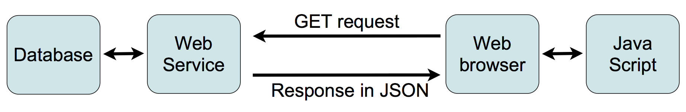

DRAFT
Introduction to the SDMX-JSON Data Message
ESCB WG-SIM Meeting
26-27 November 2014, Frankfurt
ESCB WG-SIM Meeting
26-27 November 2014, Frankfurt
JSON (JavaScript Object Notation) is a lightweight data-interchange format.
Developers will be able to write software that requests responses in JSON from SDMX RESTful API and processes the data and metadata in the JSON response in order to produce useful data visualizations on the Web.

For Slow Networks

For Mobile Devices

For Diverse Developers

For Diverse Users
{
“header”: { ... },
“errors”: { ... },
“structure”: { ... },
“dataSets”: [ ... ]
}
All comments are welcome!
twg@sdmx.org
| Content | ||||
|---|---|---|---|---|
| Speed | ||||
| Size (uncompressed) |
Please Wait...
This time series chart is
not a static picture. Client running this presentation sends a
request to a
server running SDMX 2.1 RESTful Web Service and displays the data in the JSON response.
JavaScript visualisation library D3.js provides the charting
functionality.
Refresh Chart
D3.js charts are dynamic and it is possible to add interactivity without any changes to the backend SDMX Web Service.
Use a spacebar or arrow keys to navigate